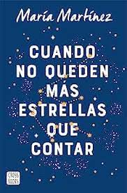

Inicio Informatica Videojuegos Libros Peliculas

Cuando No Haya Más Estrellas Que Contar
¿Cómo se ignora lo que late en tu interior?
¿Cómo se recupera el rumbo de una vida trazada por una mentira?
Desde muy pequeña, Maya se ha sacrificado en cuerpo y alma por el ballet. Trabaja como solista en la Compañía Nacional de Danza y los ballets más prestigiosos han puesto sus ojos en ella. Sin embargo, un grave accidente acaba con su futuro prometedor.
El único mundo que Maya conoce se ha derrumbado.
Su abuela, que ha guiado cada uno de sus pasos, la culpa por lo sucedido.
La ausencia de su madre pesa más que nunca.
Y un hallazgo fortuito abrirá una profunda herida.
Un viaje inesperado, una chica incompleta y una verdad escondida en una caja de música.
A veces, dejar que suceda es todo lo que necesitas.